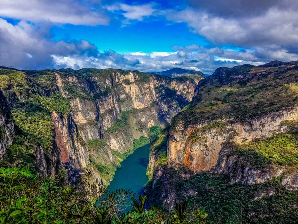

Chiapas es un estado ubicado en la región sureste de México. Su capital es Tuxtla Gutiérrez, conocida por su riqueza cultural y biodiversidad. El estado tiene una superficie de 73,125 km² y una población de aproximadamente 5 millones de habitantes, según el censo de 2020. Chiapas es reconocido por su diversidad natural, especialmente por sus selvas y montañas, además de su riqueza en culturas indígenas.
La Feria Nacional de San Marcos es una de las celebraciones más importantes de Chiapas, llevada a cabo en abril. Además, la Fiesta Grande de San Cristóbal de las Casas en julio, es una tradición emblemática que combina lo religioso con lo cultural, destacando danzas y procesiones.
Entre los platillos típicos de Chiapas destacan:
| Dato 1 | Dato 2 | Dato 3 |
|---|---|---|
| Chiapas es el estado con mayor biodiversidad en México, albergando más de 14,000 especies de flora y fauna. | Tuxtla Gutiérrez es conocida como la "ciudad de las cañadas" debido a sus vistas espectaculares y barrancas. | El nombre "Chiapas" proviene del náhuatl "chiapan" que significa "lugar de charcos o ciénegas". |